Atom a été développé par GitHub en tant qu'éditeur de texte. Facebook a ensuite développé les projets Nuclide6 et Atom IDE pour transformer Atom en un environnement de développement intégré (IDE), mais le développement s'est arrêté en décembre 2018.
Lorsque vous utilisez Git dans le cadre de votre flux de travail, il peut être très utile d'avoir un accès facile à une interface graphique pour accélérer vos processus.Il existe un grand nombre d'interfaces graphiques Git parmi lesquelles choisir, mais si vous utilisez Atom comme éditeur de code, vous n'aurez pas à aller bien loin pour trouver des options solides.
Je vais vous montrer comment utiliser l'interface graphique de Atom pour interagir facilement avec Git sur vos repo Github.
Voici la liste des actions de bases qu'on va voir dans ce tuto :
La plupart des fonctionnalités résident dans les éléments du dock Git et GitHub.
Si un projet n'a pas encore de repo Git, vous pouvez en créer un à partir du panneau Git.
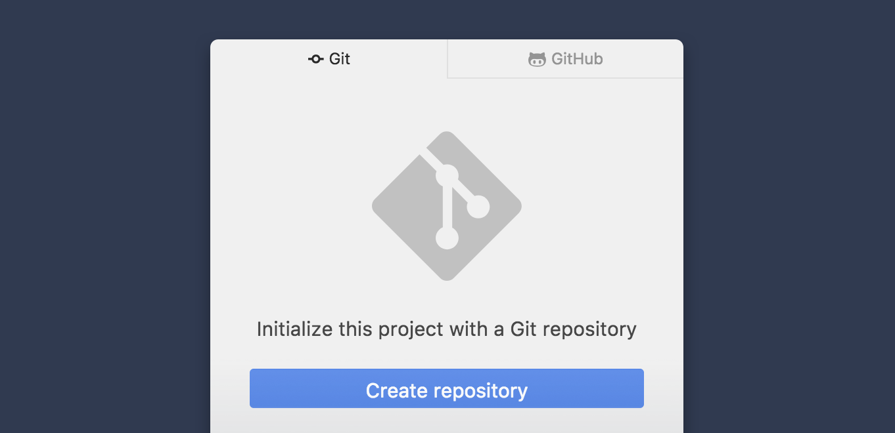
Pour cloner un référentiel, ouvrez le panneau GitHub alors qu'aucun dossier de projet n'est ouvert dans Atom et cliquez sur "Cloner un référentiel GitHub existant". Dans la boîte de dialogue, collez l'URL d'un référentiel et cliquez sur « Cloner ». Le nouveau projet sera ajouté à l'arborescence.
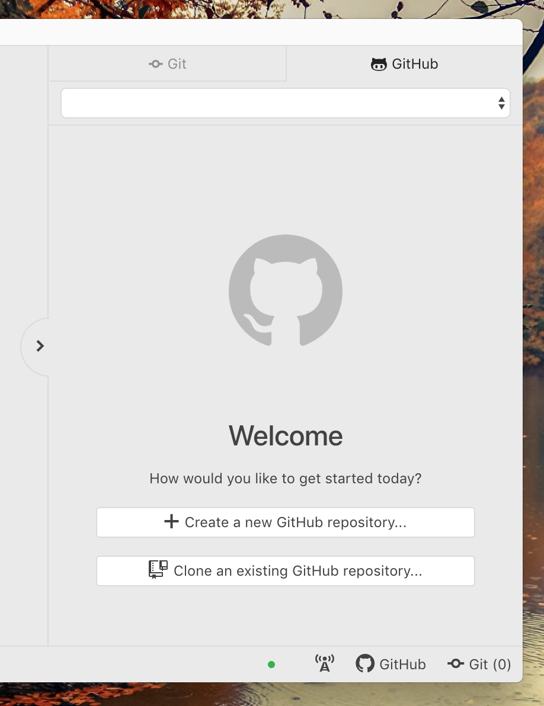
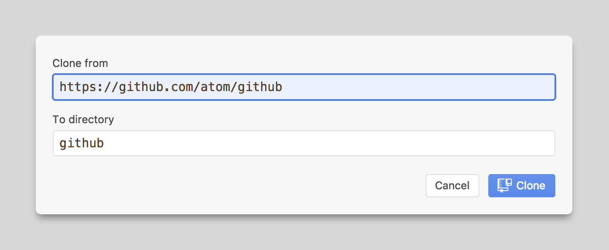
Pour ouvrir l'info-bulle de branche, cliquez sur l'icône de branche dans la barre d'état. De là, vous pouvez créer ou changer de branche.
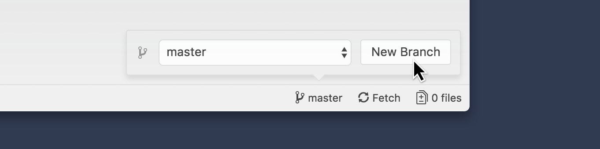
Après avoir apporté quelques modifications, mettez en Stage tout ce que vous voulez faire partie du prochain commit. Options du Stage :
Utilisez la touche Ctrl-Left ou Ctrl-Right pour basculer entre la liste des fichiers et les différentes vue. Le déclassement peut se faire de la même manière.
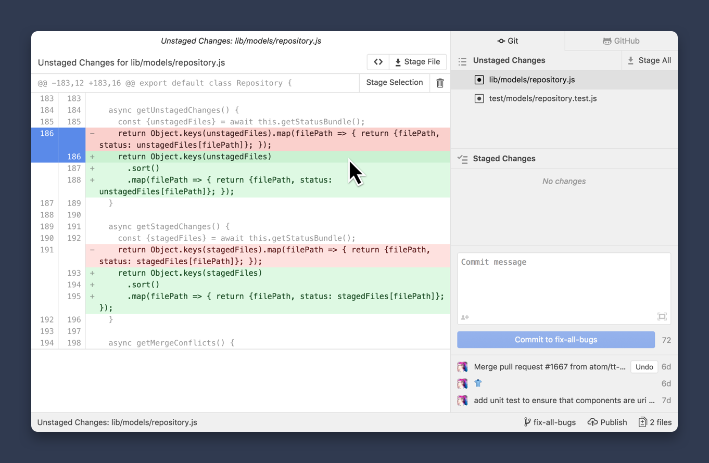
Si vous ne souhaitez plus conserver certaines modifications, vous pouvez les supprimer. C'est similaire à Stage, mais accessible derrière un menu contextuel.
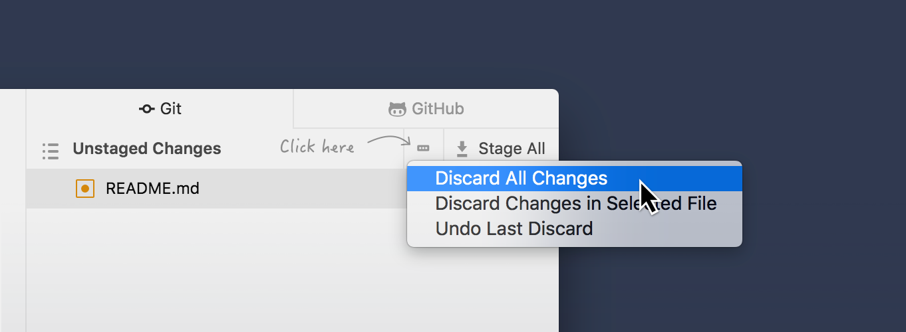
Pour vérifier toutes les modifications apportées à votre prochain commit, cliquez sur le bouton "See All Staged Changes" au-dessus de la boîte de message de commit. Il vous permet de voir toutes vos "Staged changes" dans un seul volet. Cet "aperçu du commit" peut également servir d'inspiration pour rédiger le message de commit.
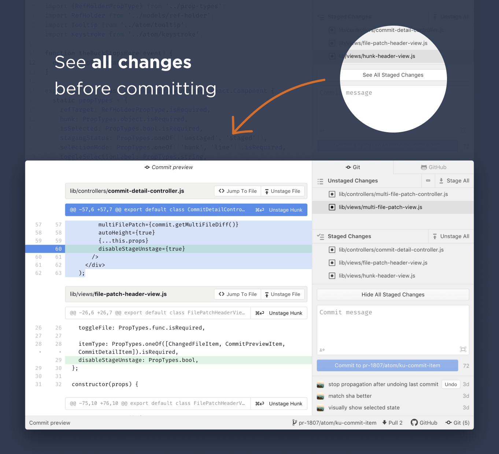
Une fois que vous avez mis en "Stage" vos modifications, saisissez un message pour le commit. N'hésitez pas à décrire le commit plus en détail après avoir laissé une ligne vide. Finalisez en cliquant sur le bouton Valider . Si vous avez besoin de plus d'espace, cliquez sur l'icône de développement en bas à droite. Il ouvrira un éditeur de commit au centre.
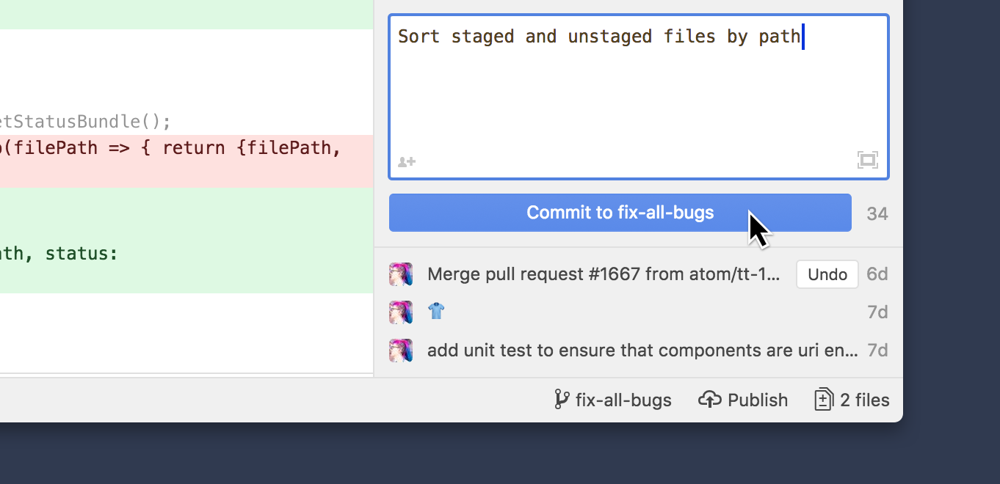
Pour ajouter plusieurs co-auteurs à un commit, cliquez sur l'icône "👤➕" dans le coin inférieur gauche de l'éditeur de message de commit. Vous pouvez désormais rechercher par nom, e-mail ou nom d'utilisateur GitHub pour créditer un co-auteur.
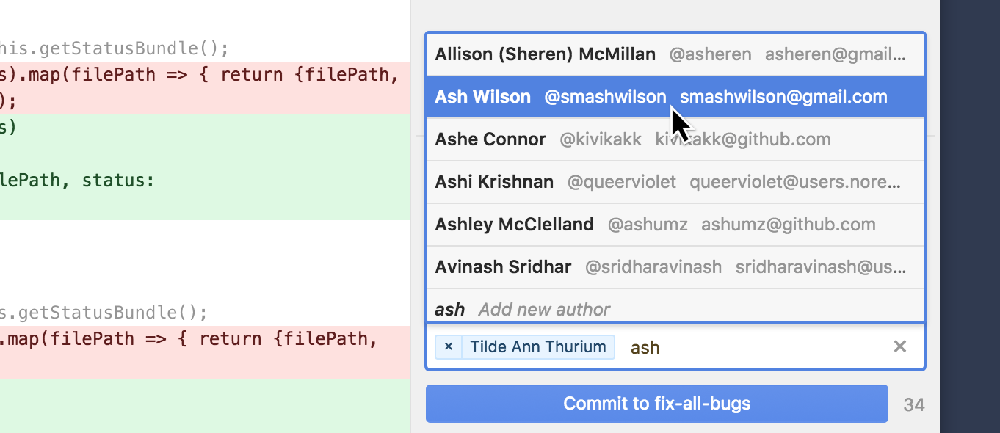
Si vous avez oublié de commit une modification et que vous souhaitez l'ajouter à votre commit précédente, faites un clic droit sur le dernier commit, puis choisissez "Amend" dans le menu contextuel.
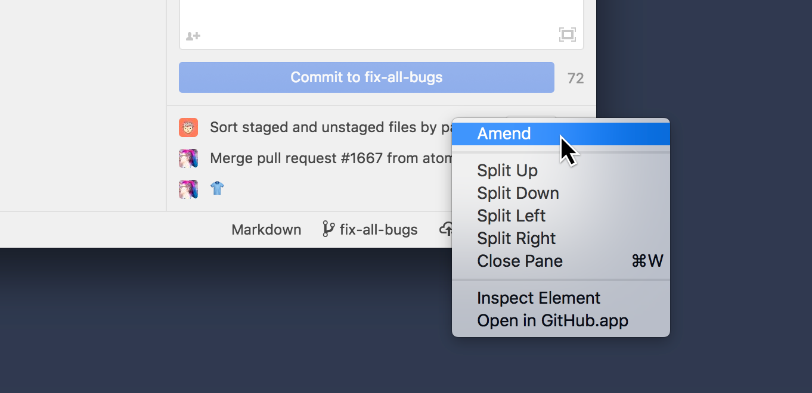
Si vous souhaitez modifier le message de commit de votre dernier commit, ou ajouter/supprimer des modifications, cliquez sur le bouton "Undo". Il reviendra à l'état juste avant que vous ayez cliqué sur le bouton de validation.
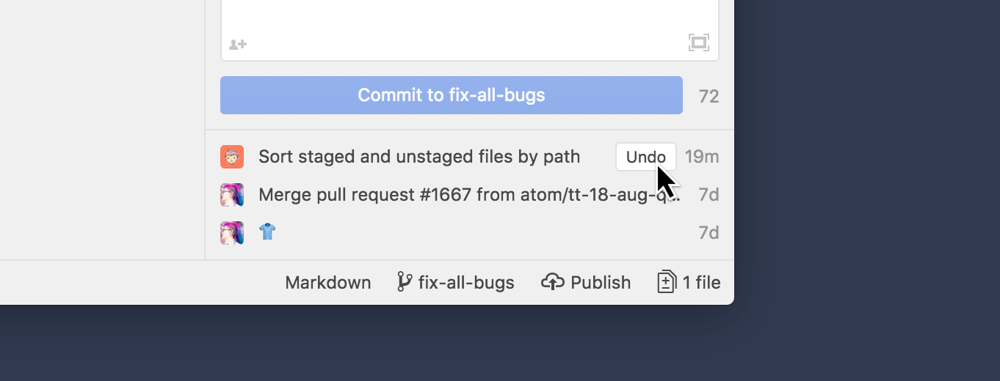
Une fois que vous avez effectué quelques commits, cliquez sur un message de commit dans la liste des commits récents pour voir le message de commit associé à chacun
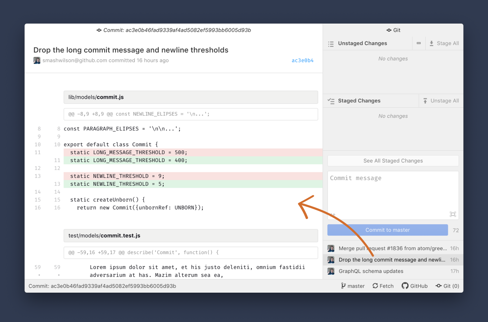
Lorsque vous êtes prêt à partager vos modifications avec les membres de votre équipe, cliquez sur le bouton Publish dans la barre d'état. Il poussera votre branche locale vers le repo distant. Après avoir effectué plusieurs commits, vous pouvez également Push à partir de la barre d'état.
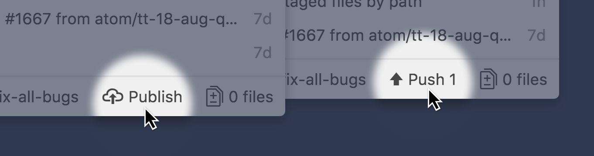
De temps en temps, c'est une bonne idée de cliquer sur le bouton Fetch pour voir si un autre membre de l'équipe a poussé les changements. Si tel est le cas, cliquez sur Pull pour fusionner(merge) les modifications dans votre branche locale.
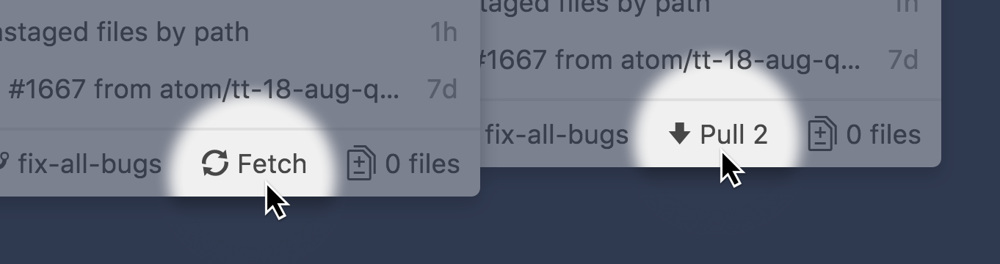
Parfois, il peut y avoir des conflits lors de la tentative de merge. Les fichiers qui ont des conflits de merge apparaîtront dans la liste "Merge Conflicts". Cliquez sur un fichier pour ouvrir l'éditeur. Là, vous pouvez résoudre le conflit en choisissant une version ou en apportant d'autres modifications. Une fois cela fait, mettez le fichier en Stage et Commit.
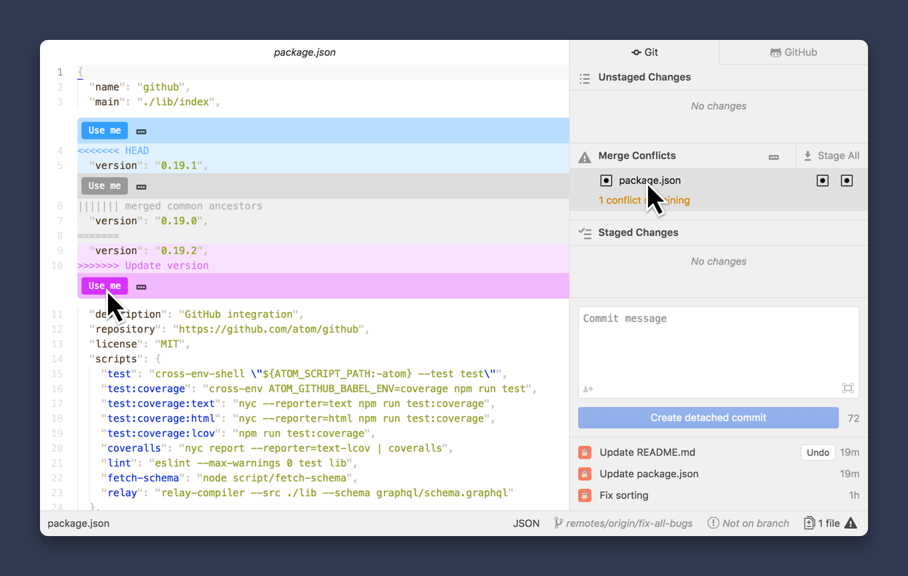
Lorsque vos modifications sont prêtes à être examinées par les membres de votre équipe, ouvrez le panneau "GitHub" Ctrl+8 et cliquez sur Open new pull request . Cela ouvrira le navigateur dans lequel vous pourrez continuer à créer un Pull request. Si les commits n'ont pas été poussés ou que la branche n'est pas encore Publish, le package GitHub le fera automatiquement pour vous.
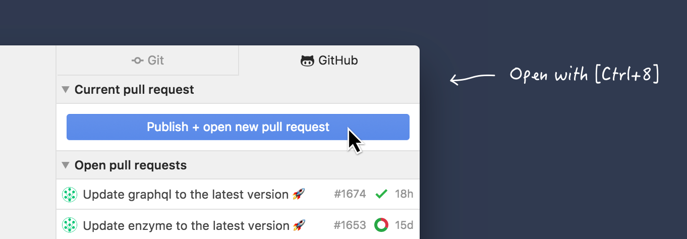
Une fois le Pull request créé, elle apparaîtra sous Checked out pull request en haut du panneau. En dessous se trouve une liste des Pull request déjà efectués. Il vous permet de trouver rapidement une pull request par avatar, titre ou numéro de PR. Il vous permet également de garder un œil sur l'état du CI. En cliquant sur un Pull request dans la liste, un volet central s'ouvre avec plus de détails, la chronologie et les conversations.
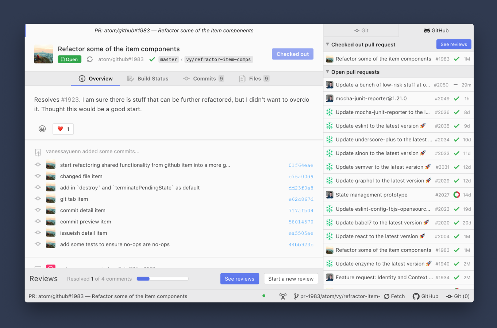
Pour tester un pull request localement, ouvrez-la dans le centre de l'espace de travail en cliquant sur la pull request dans la liste "open pull request" de l'onglet GitHub, puis cliquez sur le bouton Checkout . Il créera automatiquement une branche locale et extraira toutes les modifications. Si vous souhaitez contribuer à cette pull request, commencez à apporter des modifications, validez et poussez. Votre contribution fait désormais partie de cette pull request.
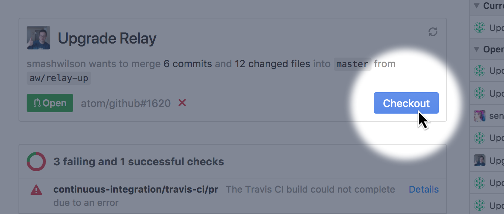
Pour faire la révision sur un pull request, ouvrez l'onglet Reviews à partir du bouton See Reviews du pied de page d'un volet de pull request. Alternativement, si le pull request a déjà été checker, l'onglet Avis peut également être ouvert à partir du même bouton sur l'onglet GitHub.
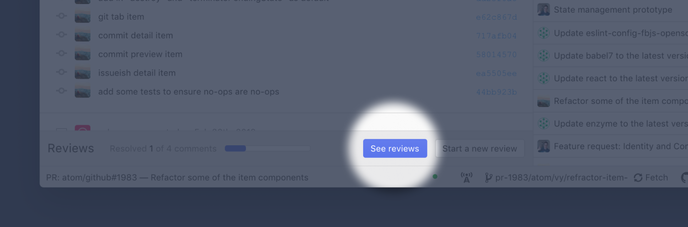
Voilà, vous avez les armes pour apprehender l'interface graphique de git et travailler avec vos projet github directement dans l'éditeur Atom. D'après mon expérience, cela rend le travail avec Git plus agréable, fluide et efficace.En attendant de se familiariser avec les commandes du terminal, car biensur ce qui font de nous de vrai developer , cool, c'est de savoir jouer avec le terminal comme s'il était notre Meilleur Ami!